Repair Procedures
Removal
1. Remove the ignition key from the vehicle.
2. Disconnect the battery negative cable and wait for at least three minutes before beginning work.
3. Remove the floor console.
4. Remove the rear heating joint duct (A).
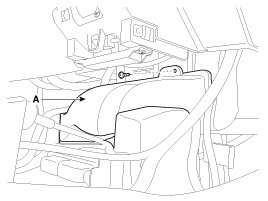
5. Pull up the lock, of the SRSCM connector, the disconnect the connector (A).
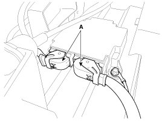
6. Remove the SRSCM mounting bolts (3EA) from the SRSCM, then remove the SRSCM.
Installation
1. Remove the ignition key from the vehicle.
2. Disconnect the battery negative cable and wait for at least three minutes before beginning work.
3. Install the SRSCM with the SRSCM mounting bolts.
Tightening torque
9.8 - 13.7 N.m (0.8 - 1.0 kgf.m, 7.2 - 10.1 lb-ft)
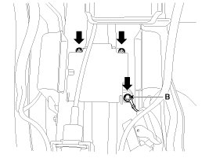
NOTE:
Use new mounting bolts when replacing the SRSCM after a collision.
When installing the SRSCM bolt, install the ground wire (B) with a bolt as indicated above picture.
4. Connect the SRSCM harness connector.
5. Install the rear heating joint duct and floor console.
6. Reconnect the battery negative cable.
7. After installing the SRSCM, confirm proper system operation:
A. Turn the ignition switch ON; the SRS indicator light should be turned on for about six seconds and then go off.
Variant coding
After replacing the SRSCM with a new unit, the "Variant Coding" procedure must be performed.
NOTE:
1. On SRSCM variant coding mode, the airbag warning lamp is periodically blinking (ON: 0.5sec., OFF: 0.5sec.) until the coding is normally completed.
2. If the variant coding is failed, DTC B1762 (ACU Coding Error) will display and the warning lamp will be turned on.
In this case, perform the variant coding procedure again after confirming the cause in "DTC Fault State Information".
Variant Coding can be performed up to 255 times, but if the number of coding work exceeds 255 times, DTC B1683 (Exceed Maximum coding Number) will be displayed and SRSCM must be replaced.
3. If the battery voltage is low (less than 9V), DTC B1102 will be displayed. In this case, charge the battery before performing the variant coding procedure.
DTC B1762 (ACU Coding Error) and B1102 (Battery Voltage Low) may be displayed simultaneously.
Variant coding Procedure
On-Line type on GDS
1. With the ignition "OFF", connect GDS.
2. Ignition "ON" & Engine "OFF" select vehicle name and airbag system.
3. Select Variant coding mode.
4. Follow steps on the screen as below.
1) Initial ACU Variant Coding screen
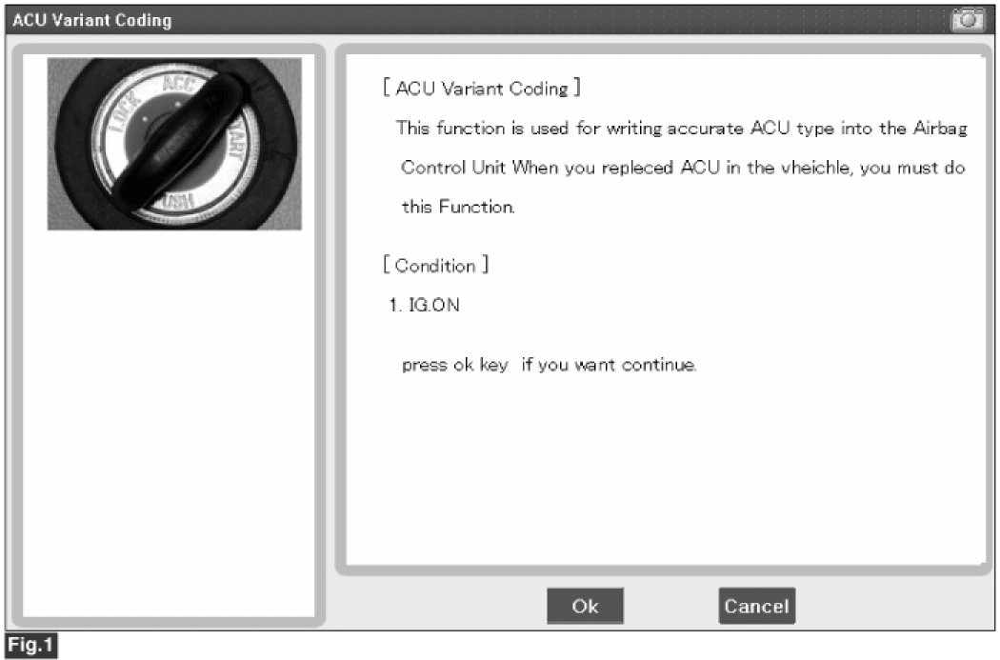
2) VIN Code entering screen
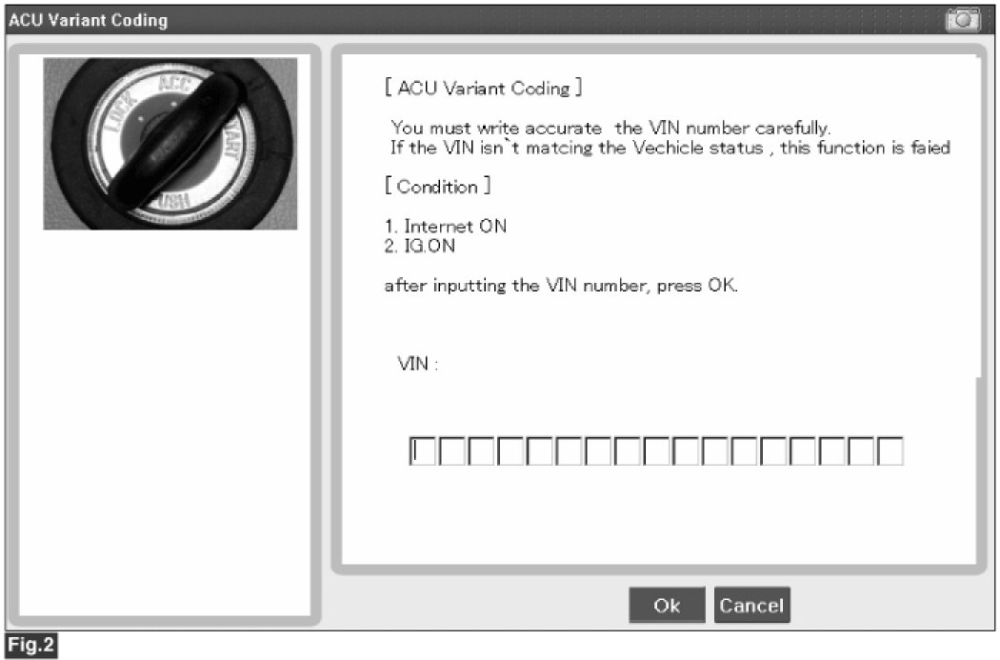
3) Variant coding's proceeding screen-1
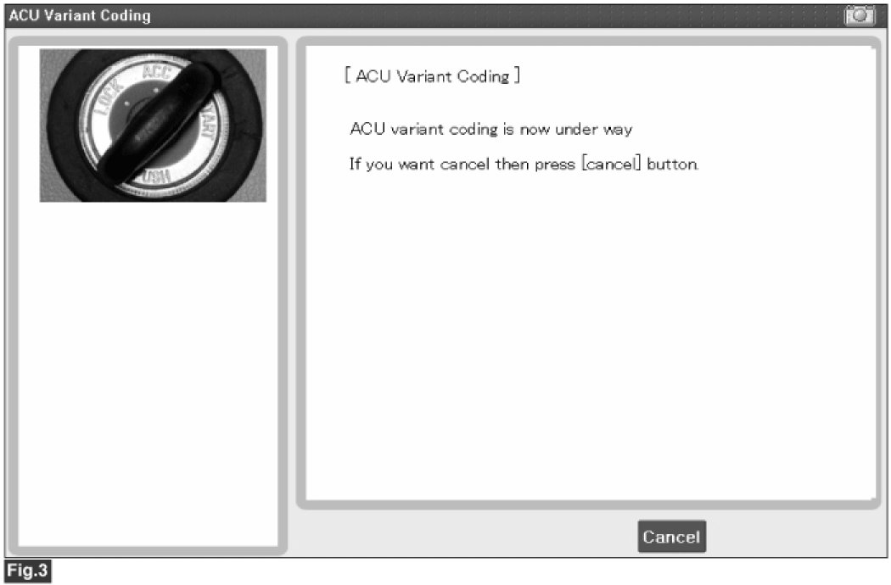
4) Variant coding's proceeding screen-2
5) Variant coding is completed
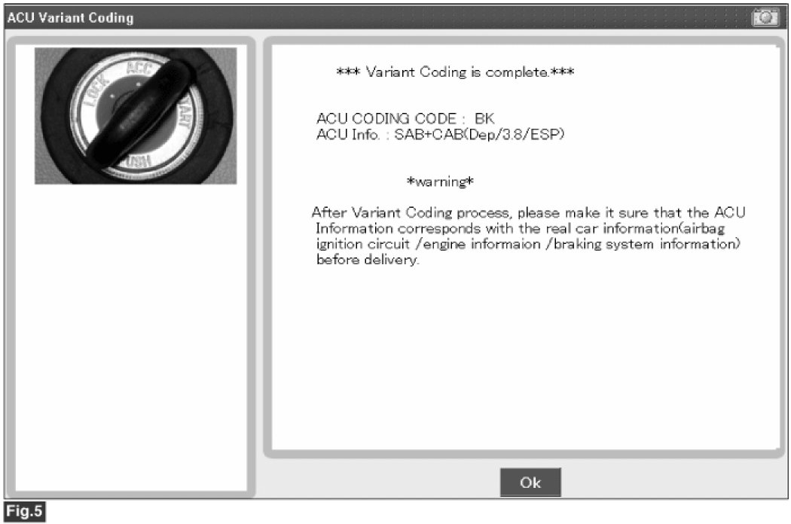
NOTE:
1) This screen is opened when you try the variant coding again on the SRSCM that already has the variant coding performed.
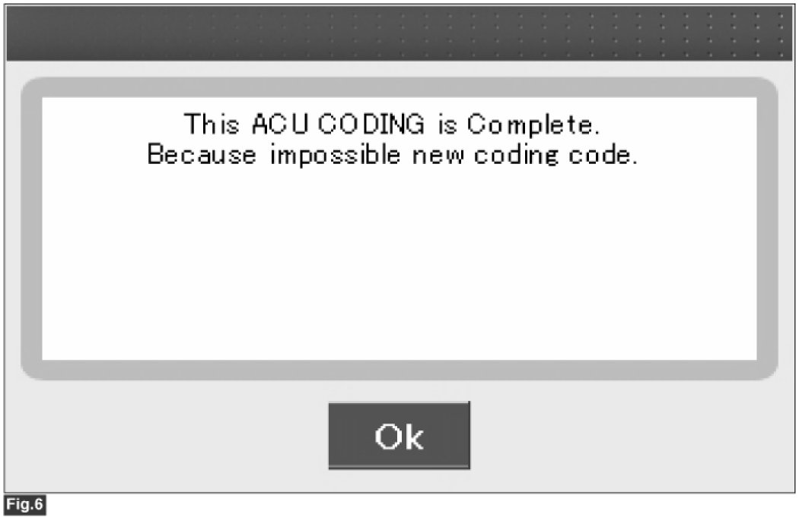
2) If communication fails, the following screen will appear.
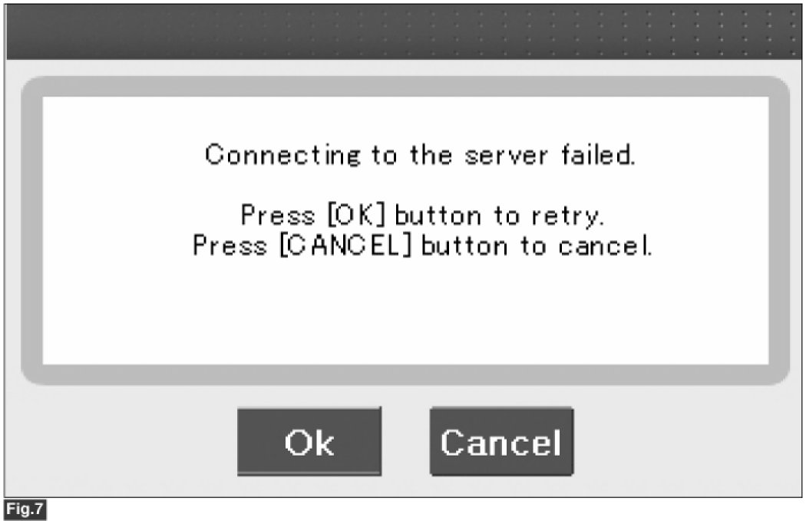
Off-line type on GDS (This can be used when not connecting to internet)
1) Initial ACU Variant Coding screen
2) ACU Coding Code entering screen
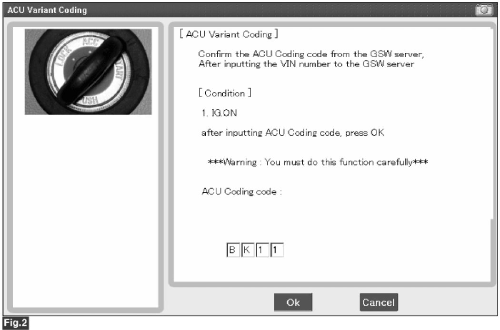
3) Screen of rechecking ACU Coding code's entering
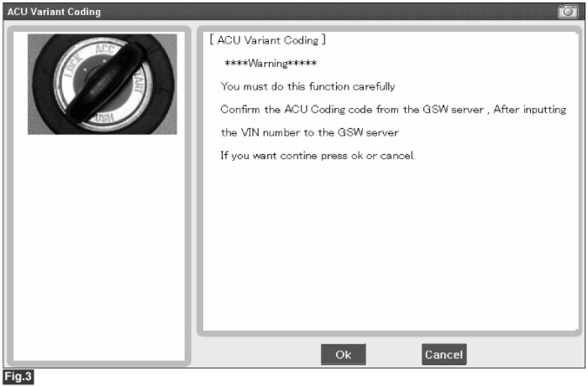
4) Variant coding's proceeding screen-1
5) Variant coding's proceeding screen-2
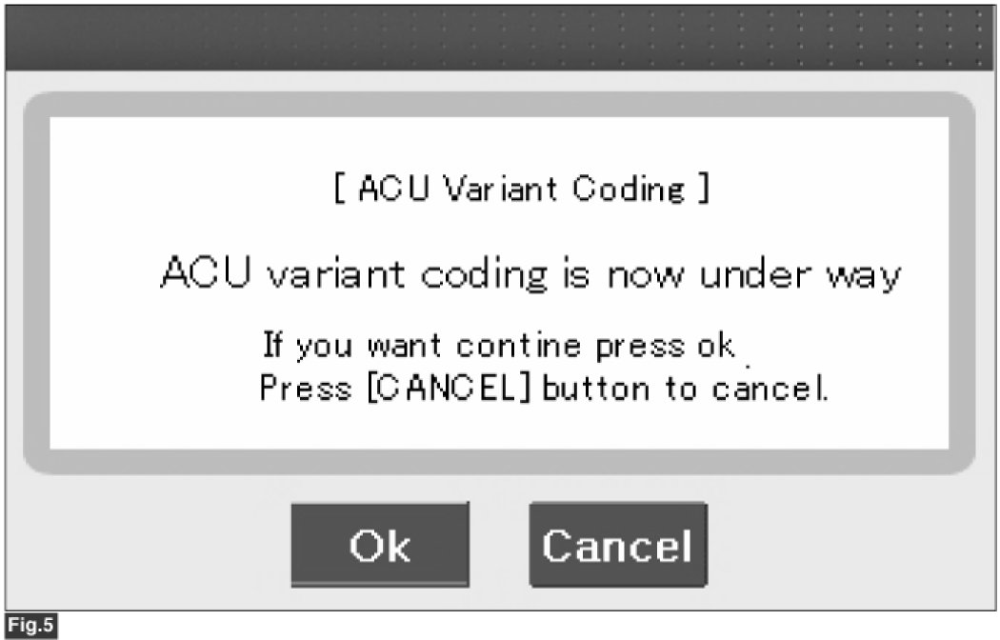
6) Variant coding is completed
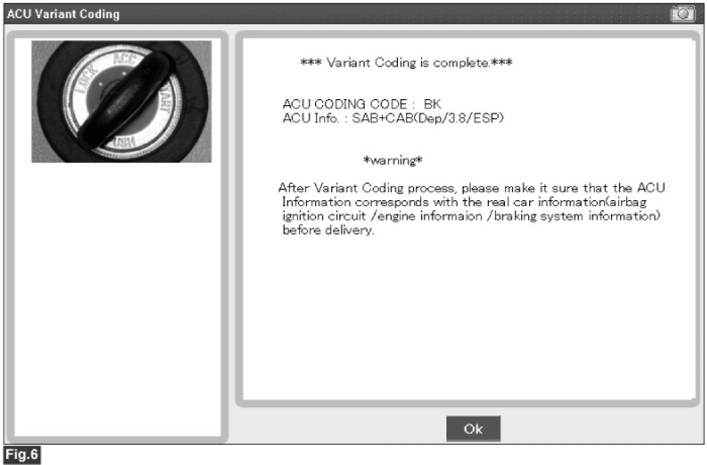
NOTE:
1) This screen is opened when you try the variant coding again on the SRSCM that already has the variant coding performed.